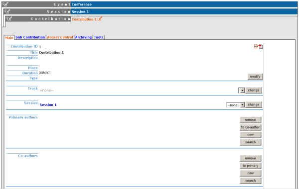

| Prev | Chapter 1. Contribution Managers Guide | |
| Prev | Chapter 1. Contribution Managers Guide | |
Once in the contribution management area you can start managing your contribution using the following tabs.
 | This is just a quick start guide for contribution management, for an indepth explanation please see "Contributions" in the Indico User Guide, section 2.4.3.1 |
The main tab contains all the data about the contribution itself.

Any information, material and people within this main tab apply to the contribution in general.
The sub contribution tab allows you to add and remove sub contributions.

Clicking on the title of a sub contribution will take you into its management area.
The access control tab allows you to add other contribution managers and to give permission for users to submit material for your contribution.

The tools tab allows you to delete the contribution, move the contribution and write minutes for the contribution.